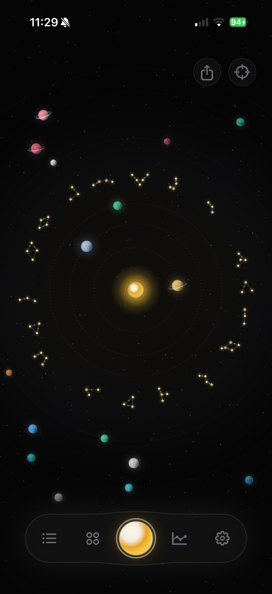

Private by design
Your habit and Galaxy data stays on your device. Solyx does not require an account.

Now on the App Store
Solyx turns real consistency into planets, stars, and constellations you can see take shape over time.
For iPhone and iPad. Subscription required.
A habit tracker you can see
Solyx gives everyday progress somewhere to live. Every completion adds to a galaxy that is entirely yours.
Choose what you want to work on and a schedule you can realistically keep.
Each real completion grows your progress, locks stars, and brings the next discovery closer.
Reveal unique planets and constellations, then watch your personal system expand.
The Galaxy
Habits become orbiting planets. Completions become stars. Consistency gradually reveals a galaxy that belongs only to you.

Daily rhythm
Log a habit in one tap, follow flexible daily or weekly schedules, and keep the focus on what you did today.

Discoveries
Planets and constellations arrive through your Galaxy as you follow through. Every discovery has a permanent identity and a place in your Archive.
Explore 108 unique planets and 108 constellations.

Mission Control
Look beyond a single streak with clear weekly, monthly, and yearly views of the consistency building your Galaxy.

Built with intention
Your habit and Galaxy data stays on your device. Solyx does not require an account.
Build daily, weekly, or specific-day habits around the life you actually have.
Name your Galaxy, choose its appearance, and share a privacy-safe Field Journal.
Frequently asked questions
Solyx is available now on the App Store for iPhone and iPad running iOS or iPadOS 17 or later.
Solyx is available for iPhone and iPad. There is no announced Android release yet.
No. Your habits and galaxy are stored on your device. Apple handles purchases, and RevenueCat manages subscription access.
Solyx requires a monthly or yearly subscription. Eligible new subscribers can try the yearly plan free for 7 days. Prices and renewal terms are shown before subscribing.
Your galaxy starts here
Available now for iPhone and iPad.